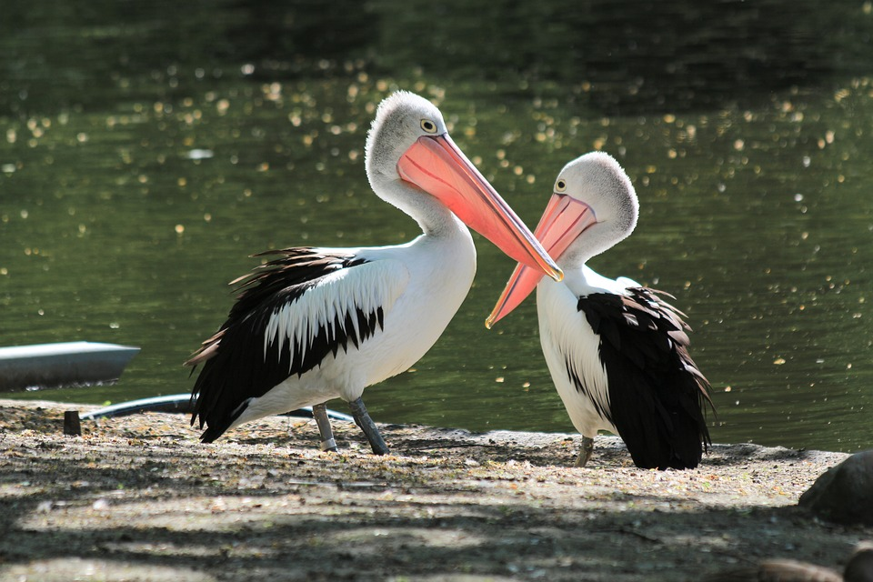

Bilder på pelikaner

Pelikaners främsta kännetecken är den säregna näbben med en slags säck i undernäbben som används för att fånga in byten och låta vattnet rinna av. Säcken är utspänd och stängs med övernäbben, som i stället är tunn och platt. Kroppen är klumpig och stor, men halsen smäcker och välvd. Strupen och ögonpartiet är naket, men fjäderdräkten i övrigt riklig och tät och ganska yvig. Honor och hannar är tämligen lika varandra.
De åtta nu levande arterna finns från tropiska latituder till den tempererade zonen, i stort sett runt hela jorden. De saknas dock i det inre av södra Sydamerika och på haven långt från kusterna. I en del andra regioner förekommer de endast fläckvis. De pelikaner som påträffats i Sverige anses inte spontana utan bedöms utgöra förrymda djurparksexemplar.
Deras gång är ganska upprätt, och de är duktiga simmare. Endast ett fåtal arter dyker efter föda; de flesta fiskar vid vattenytan. Pelikaner lever i flockar av hundra- eller tusental, och samarbetar i det mesta de företar sig. Sinsemellan är de fredliga, men de går inte väl ihop med andra arter. Häckningen sker i våtmarker. De lägger 2-4 ägg i bon om 2,5 meter i diameter. Ungarna kläcks efter 38 dagar, och är grå och duniga. Honor och hannar turas om att ruva äggen och är tillgivna föräldrar. Pelikaner kan tämjas, och förökar sig ofta i fångenskap. De lever av fisk och andra ryggradsdjur, t.ex. fågelungar av kapsulor eller änder.